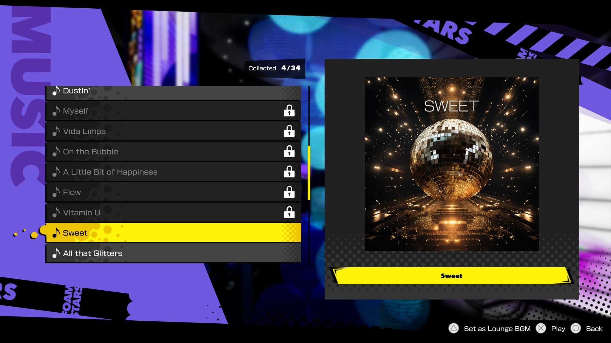
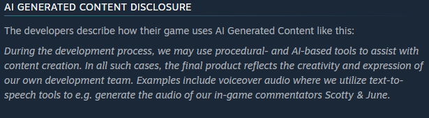

There have been many cases of AI being used in both the development of the actual game, as well as content within the game. Below are some of these examples, as well as other major responses to the use of AI in video games.
Examples of Generative AI in Video Games:
- AI Dungeon - A text-based video game that utilizes AI to define a world, take actions, and customize the experience.
- The Finals - A First-person shooter that uses AI generated voice lines rather than conventional voice actors.
- Foamstars - A multiplayer game developed by the AAA developer Square Enix. Uses Midjourney to create some in game art for album covers. 

Major Responses to AI usage in video games:
- Valve - Developers of Steam, the most popular online video game distributor. Requires that developers disclose when and where AI is used within the game. 
- EA - Company behind Madden and many other AAA games. Are exploring using AI for dynamic in game interactions, making art, and creating music.
- Square Enix - Developers of Final Fantasy series and other popular AAA games. Plans to aggressively utilize AI in the creation and marketing of their video games.
- Ubisoft Ghostwriter - An AI tool developed by the AAA game company Ubisoft. Uses AI to generate dialogue, which can then be polished by the writers